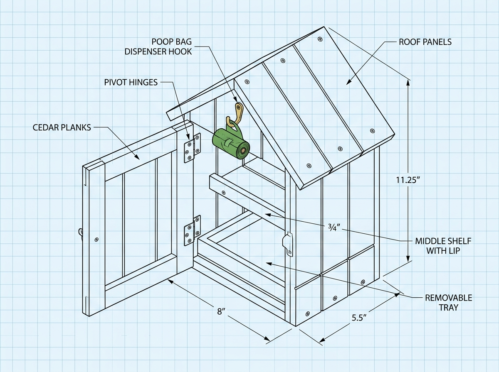
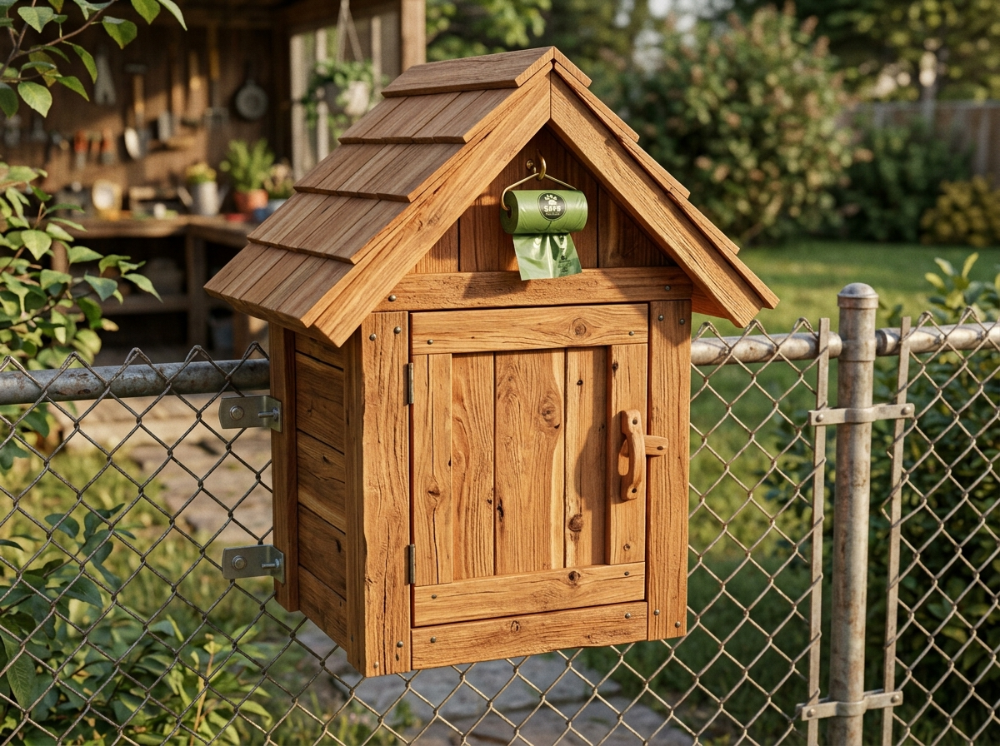

Compact Cedar Dog Kennel Storage House Plan

Assembly diagram (door open)

Finished caddy render
Project: Outdoor Fence-Mounted Kennel Caddy
Material: 3/4" Finished Cedar Planks (Nominal 1" x 6" / Actual 3/4" x 5-1/2")
Units: Imperial (Inches & Fractions)
1. Project Overview & Specs
Compact, house-shaped cedar storage caddy designed to hang on an outdoor chain-link dog kennel fence. Stores treats and poop bags in a weatherproof, magnetically sealed enclosure.
- Overall Dimensions: 8" Wide × 5-1/2" Deep × 11-1/4" High (to roof peak)
- Roof Pitch: 45° steep gable roof (fast rain/snow shedding with 3/4" front/side overhangs)
- Bottom Tray: Fixed in place (glued/nailed) — full depth with retaining lip. No drawer mechanism.
- Bag Hook: 1-1/2" brass/stainless screw hook on the inside face of one side wall, mid-height — bags hang clear of the tray without blocking access.
- Security & Leveling: Internal shelves feature a 3/4" raised front retaining lip to prevent items from falling out on un-level fence lines.
- Door Latch: Weatherproof magnetic door catch embedded into the frame for a flush, wind-proof seal.
2. Bill of Materials (BOM) & Hardware List
Lumber Required
3/4" Cedar Board Stock (Actual 3/4" x 5-1/2"): Approx 6 Linear Feet total.
Hardware & Fasteners
- 1-1/4" Stainless Steel Exterior Pocket Screws / Trim Screws: ~24 pcs
- 1-1/2" Stainless Steel Butt Hinges (or Flush Mount Hinges): 2 pcs (with SS screws)
- Heavy-Duty Magnetic Cabinet Catch (Cabinet Magnet + Striker Plate): 1 set
- Stainless Steel / Brass L-Hook or Screw Hook (1-1/2"): 1 pc (side-wall bag dispenser hook)
- 1/4" Stainless Steel U-Bolts or Heavy Duty Cable Ties: 2 pcs (for chain-link fence mounting)
- Waterproof Exterior Wood Glue (Titebond III): 1 bottle
3. Master Imperial Cut List
All lumber thickness is finished 3/4" cedar. Widths refer to ripped board widths.
| Part | Description | Qty | Thickness | Width | Length | Joinery / Angle Notes |
|---|---|---|---|---|---|---|
| A | Back Panel | 1 | 3/4" | 6-1/2" | 10-1/2" | Top mitered at 45° pitch (peak at center 10-1/2", side walls 7-1/4") |
| B | Side Walls | 2 | 3/4" | 4-3/4" | 7" | Top edge cut at 45° angle to match roof pitch |
| C | Bottom Base (fixed tray) | 1 | 3/4" | 4-3/4" | 6-1/2" | Square cut; glued & nailed permanently in place |
| D | Middle Shelf | 1 | 3/4" | 4" | 6-1/2" | Recessed 3/4" to accommodate front retaining lip |
| E | Retaining Lips | 2 | 3/4" | 3/4" | 6-1/2" | Front lips for Bottom Base & Middle Shelf |
| F | Left Roof Board | 1 | 3/4" | 5-1/2" | 6" | Top ridge cut at 45° bevel; overhangs front by 3/4" |
| G | Right Roof Board | 1 | 3/4" | 5-1/2" | 5-1/4" | Butt-jointed against Left Roof Board at 45° peak |
| H | Full Front Door | 1 | 3/4" | 6-1/2" | 9-3/4" | Top gable mitered at 45° to match roof contour |
| I | Fence Mounting Cleats | 2 | 3/4" | 1-1/2" | 6-1/2" | Pre-drilled for fence mounting U-bolts/ties |
4. Step-by-Step Construction Guide
Step 1: Cutting & Shaping Parts
- Back Panel (Part A): Rip a 3/4" cedar plank to 6-1/2" wide. Crosscut to 10-1/2" long. Mark the center at 3-1/4". Lay out 45° angle cuts from the center peak down to 7-1/4" height on both sides. Cut with a miter saw or track saw.
- Side Walls (Part B): Rip 2 pieces to 4-3/4" wide and 7" long. Miter the top edge of each at 45° sloping toward the front.
- Roof Boards (Parts F & G): Cut Left Roof (Part F) to 6" long and bevel the top edge at 45°. Cut Right Roof (Part G) to 5-1/4" long so it seats flush into the left roof bevel.
Step 2: Main Cabinet Assembly
- Carcase Assembly: Attach Side Walls (B) to Back Panel (A) using Titebond III glue and 1-1/4" SS pocket screws.
- Base & Shelf Installation:
- Fasten Bottom Base (C) flush with the bottom edges of the side walls — glue and nail/screw permanently in place (no drawer mechanism).
- Position Middle Shelf (D) 3-1/2" above the bottom base.
- Glue and nail/screw Retaining Lips (E) flush to the front edge of Bottom Base (C) and Middle Shelf (D).
- Side Wall Bag Hook: Pre-drill and thread the 1-1/2" Brass L-Hook into the inside face of one side wall (B), roughly mid-height. Bags hang clear of the tray without blocking access to either shelf. Choose left or right wall based on your dominant hand.
Step 3: Roof Mount
- Attach Left Roof (F) and Right Roof (G) over the side wall miters using Titebond III and SS trim screws, ensuring a 3/4" front drip overhang.
Step 4: Door & Magnetic Latch Installation
- Door Shaping (Part H): Shape the top gable of Front Door (H) at 45° to fit snugly under the roof overhang with a 1/16" reveal all around.
- Magnetic Catch: Mortise/drill a 1/2" hole for the neodymium magnet into the top right side wall (B), and screw the steel striker plate to the inner face of Front Door (H).
- Hinges: Mount the 1-1/2" Stainless Steel Butt Hinges on the left side wall and door edge.
Step 5: Chain-Link Mounting Cleats & Finish
- Attach Mounting Cleats (I) horizontally across the upper and lower back of Part A.
- Drill 5/16" holes through the cleats spaced to align with standard 2" chain-link fence diamonds.
- Secure the caddy to the kennel fence using 1/4" SS U-bolts or heavy-duty outdoor UV-rated cable ties.
- Optional: Apply 1 coat of clear penetrating exterior cedar sealer (or leave raw to weather into a silver patina).